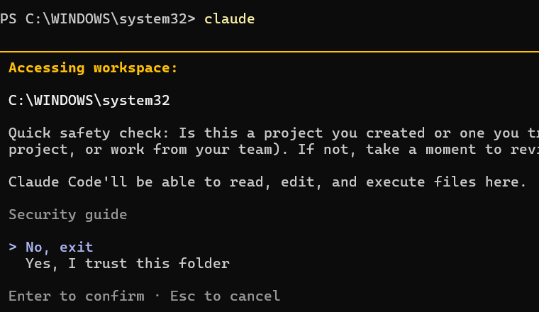
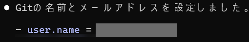
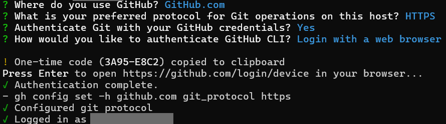

第1部 はじめの一歩
Claude CodeとGitHub 最初の5分でつまずく3か所(Windows編)
このページについて
- 読む時間
- 約5分
- こんな人向け
- WindowsでClaude Codeを初めて動かし、GitHubにつなぐ人
- 費用
- 無料でできる
準備
Git(作業の記録を残す道具)とGitHub CLI(GitHubをターミナルから操作する道具)が入っていない場合は、Claude Codeに「GitとGitHub CLIをインストールして」と頼みます。入れたら、ターミナル(文字で指示を打ち込む黒い画面)を開き直します。
つまずき1
起動したら英語で「このフォルダを信頼しますか？」と聞かれた
こんな画面が出た


No, exit か Yes, I trust this folder のどちらかを選ぶ画面。画像を押すと大きく表示します。何が起きているか
PowerShell(Windowsのターミナル)を開いた直後の場所(C:\WINDOWS\system32)で、Claude Codeを起動しています。ここはWindowsの大事なフォルダです。
PowerShellを「管理者として実行」で開くと、ここから始まることがあります。普通に開くと自分のユーザーフォルダから始まります。
こうすれば抜け出せる
No, exitを選んで抜けます。cd(場所を移動する命令)で、自分の作業フォルダへ移動します。
例：cd $HOME\Documents- もう一度
claudeと入力します。 - 同じ質問がもう一度出ます。今度は
Yes, I trust this folderを選びます。
つまずき2
Gitに登録する「名前」と「メールアドレス」を聞かれた
こんな画面が出た


何が起きているか
作業の記録に、誰がやったかを残すための設定です。
こうすれば抜け出せる
- 名前は、GitHubのユーザー名にします。
- メールアドレスは、GitHubに登録したものにします。メールアドレスが違うと、自分のアカウントの作業として記録されません。
つまずき3
gh auth login で英語の質問が4つ続く
こんな画面が出た


何が起きているか
パソコンからGitHubにログインするための質問です。
こうすれば抜け出せる
- 4つの質問に、次の順で選びます。
GitHub.comHTTPSYesLogin with a web browser
- 8桁のコードが表示されます。コードは自動でコピーされます。
- Enterを押してブラウザを開き、コードを貼ります。
- ブラウザで
Authorize githubを押します。 - そのあと
Confirm accessという画面が出て、メールでの本人確認(Verify via email)を求められることがあります。届いたメールのとおりに進めます。 - ターミナルに
Authentication complete.と出たら完了です。
しばらく放っておくと時間切れになります。そのときは gh auth login をもう一度実行すると、新しいコードが出ます。
ここまでできたら
約5分で、Claude Codeをパソコンで動かし、GitHubにログインできました。
次は、作ったものをGitHubに保存します(準備中)。
Mac編はこちら → Claude CodeとGitHub 最初の5分でつまずく3か所(Mac編)